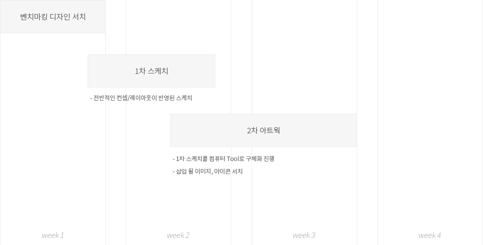
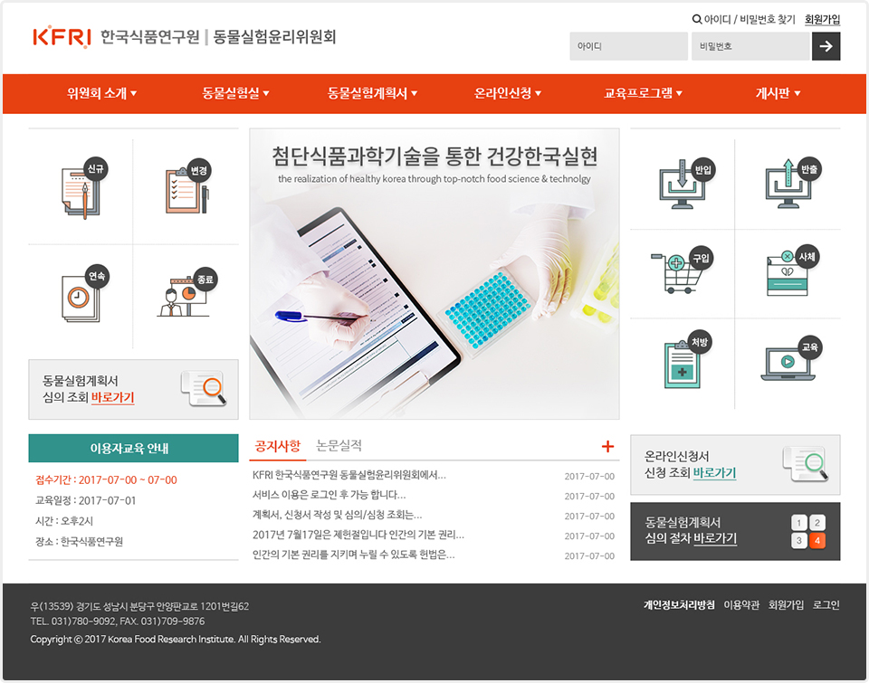

Story
한국식품연구원 동물실험윤리위원회
전북 완주에 위치한 한국식품연구원 동물실험윤리위원회(?)는
기존 운영되던 웹사이트의 노후화로 고도화된 심의프로그램 및 웹사이트가 필요했습니다.
본 프로젝트 착수 이후 디자인 및 코딩(html/css) 작업을 메인으로 담당했습니다.
담당자의 디자인 요구사항은 없었으며 임의로 제작 후 수차례 피드백을 반영하여 완료했습니다.
Work process

Colors
#e74011
#31928c
#4b4b4b
Font
나눔바른고딕
light - Regular - Bold
KFRI 동물실험윤리위원회
KFRI 동물실험윤리위원회
KFRI 동물실험윤리위원회
Sketch

Final
design issue
본 웹사이트는 연구윤리위원회 라는 기관의 특성상 다소 무겁고 어려울 수 있는 분위기를 채도가 강한 색상과 아이콘을 활용함으로 밝은 분위기를 연출해봤습니다.
